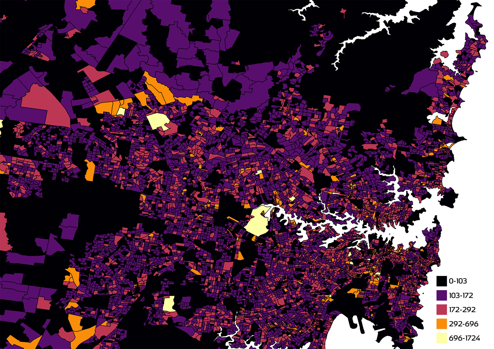

Define a mesh bock, SA1. What years does the census take place?
What is data journalism?

Identify a possible user of the data, and a possible use.
Identify a compelling story within your data.
Tell that story in words, answering the Kipling questions: who, what, how, why?
Visualize that story on a map using colour, using legends.
What is the latte line? How does your story relat to the latte line?
Using the height attribute, overlay complementary data that enriches the story. Explain why you chose that data.